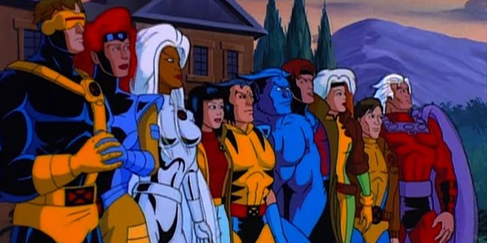

About Gambit
Gambit is a member of the X-Men who was first introduced in July 1990. He has the power to turn potential energy stored in inanimate objects into pure kinetic energy.
Gambit with the X-men
Abilities and Powers
- Self-Charging
- Skilled card-thrower
- Has superhuman charm
Other Notable X-Men
There are many different X-Men over the years. Here are just a few with unique abilities.